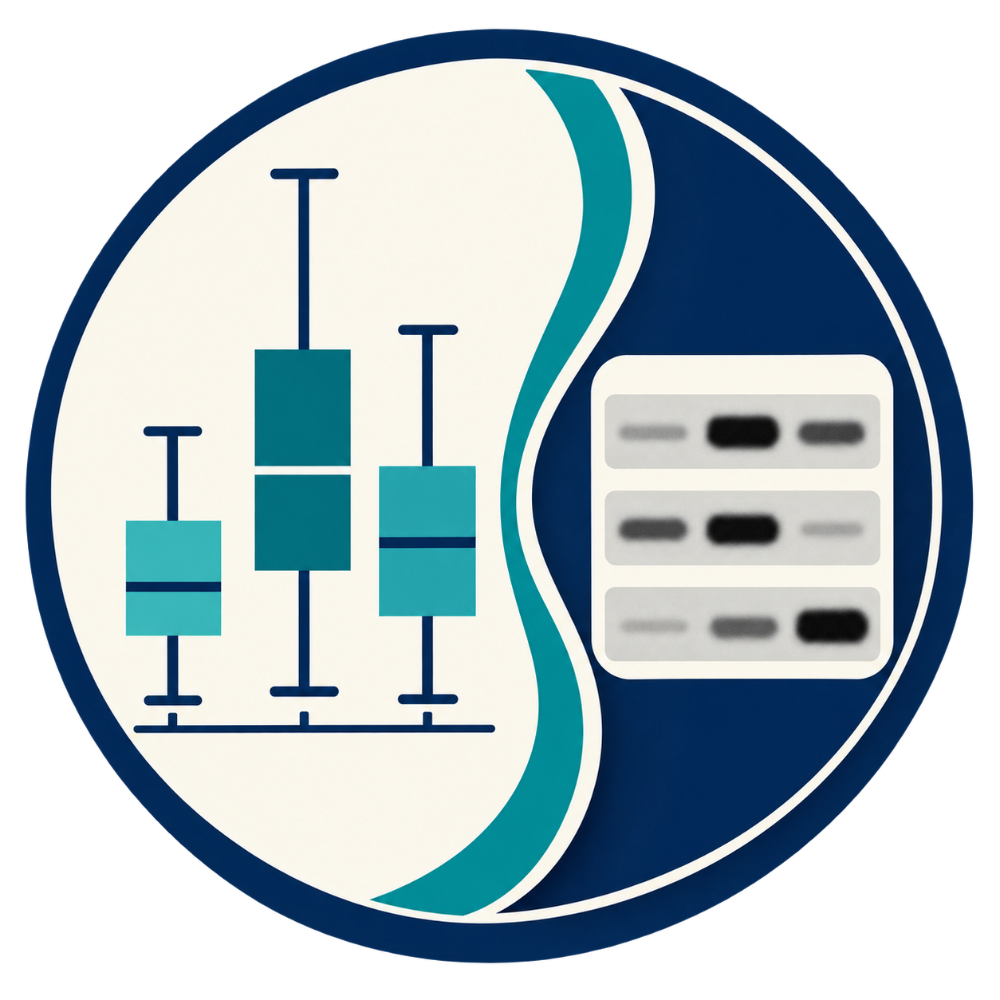

Public Alpha
Windows / macOS
01
BioFigureStat
実験構造から始める、生命科学向け統計・グラフ作成アプリ。
biological n、対応、階層、反復測定の同一性と解析の由来を明示しながら、 データ入力、ローカル統計解析、研究用グラフ作成を行います。

Plot & Blot01
実験構造から始める、生命科学向け統計・グラフ作成アプリ。
biological n、対応、階層、反復測定の同一性と解析の由来を明示しながら、 データ入力、ローカル統計解析、研究用グラフ作成を行います。
02
Western blotの記録・Figure作成・初期定量をブラウザで。
元画像の記録を保持しながら、論文・学会発表用Figureを作成します。 画像は利用者のブラウザ内で処理され、アプリケーションサーバーへ送信されません。
Shared approach
English
Plot & Blot brings together two independent, local-first applications for life-science research. BioFigureStat supports experiment-aware statistical analysis and graphing. BlotCanvas supports traceable Western blot figure preparation and preliminary quantification in the browser.
Each product has its own repository, documentation, release cycle, and issue tracker. Researcher review remains necessary before using outputs in publications or decisions.